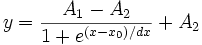

Contents |

Boltzmann function - produces a sigmoidal curve.
Number: 4
Names: A1, A2, x0, dx
Meanings: A1 = initial value, A2 = final value, x0 = center, dx = time constant
Lower Bounds: none
Upper Bounds: none
The span: span=abs(A1-A2)
Half maximal effective concentration: EC50=exp(x0)
dx ! = 0
boltzman(x,A1,A2,x0,dx)
FITFUNC\BOLTZMAN.FDF
Origin - Basica Functions, Growth/Sigmoidal